Kidsney — приёмка дизайна с владельцем
pod update PurchasesHybridCommon требует ручного вмешательства.
Кадры сняты из production web-сборки в Chromium 390×844 — это web-view, а не нативный рендер.
Пересъёмка на симуляторе: xcodebuild -downloadPlatform iOS (≈18 ГБ) → pod update → npx cap sync ios → прогнать те же 20 экранов.
Язык кадров «сейчас» — немецкий (locale демо-сессии съёмки), у A — английский; это шум съёмки, не дефект.
01 · Вход / старт
A (legacy)
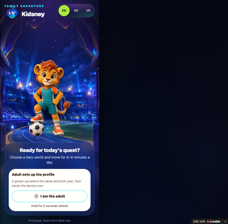
Стартовый экран: маскот-львёнок, «Adult sets up the profile», CTA «I am the adult» (удержание 2 с)
Сейчас (M28)
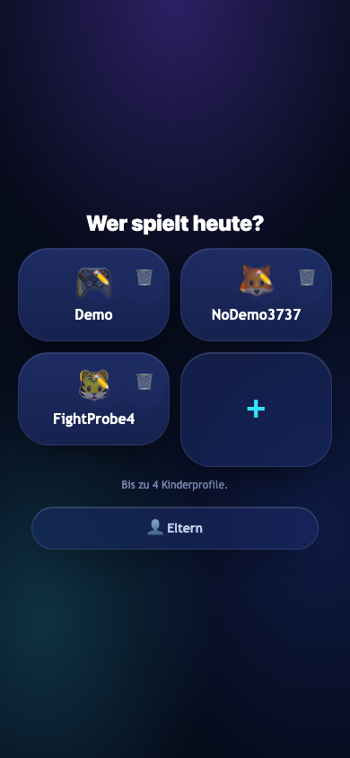
«Wer spielt heute?» — выбор из 4 профилей, кнопка «Eltern»
- Разные экраны: у B нет стартового лендинга A — вход сразу в выбор профилей. Эталон — ближайший.
- Фон: у A светлый фотореалистичный стадион с маскотом; у B тёмный синий глянец, эмодзи-аватары вместо 3D-маскота.
- Общее: тёплый «семейный» тон, CTA-акцент lime, переключатель языков EN/DE/UK.
02 · Сегодня (Today)
A (legacy)
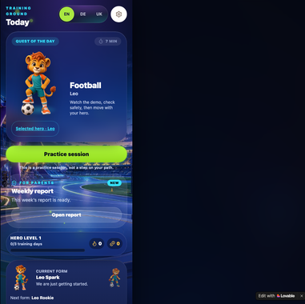
Quest of the Day (Football · Leo, 7 мин), «Practice session», баннер FOR PARENTS Weekly report
Сейчас (M28)
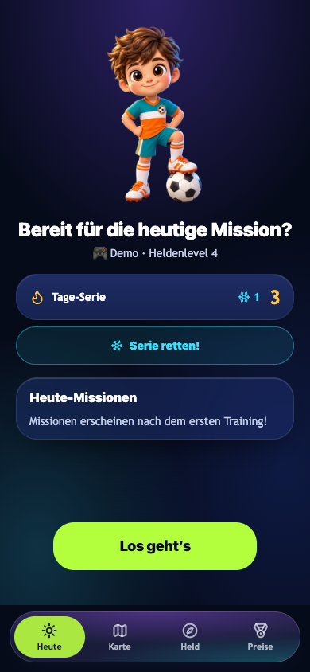
«Bereit für die heutige Mission?», 3D-герой Rocket, streak и валюта, CTA «Los geht's»
- Герой: маскот-лев A (2D-арт стадиона) ↔ 3D-персонаж-ребёнок B (Pixar-стиль).
- Фон: светлое фото стадиона ↔ тёмный градиент; у A заголовок «Today» слева, у B — карточка по центру.
- Плотность: у A квест + weekly-баннер + Hero Level; у B streak-карточки, счётчики, нижний таб-бар (у A его нет на этом экране).
- Общее: lime CTA крупным планом, glass-карточки, подпись «это тренировка, не шаг по пути» у A ≈ «7 мин» у B.
03 · Карта
A (legacy)
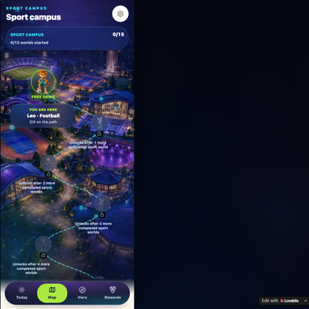
Тёмный фотореалистичный кампус, «SPORT CAMPUS 0/15», табы Today/Map/Hero/Rewards
Сейчас (M28)
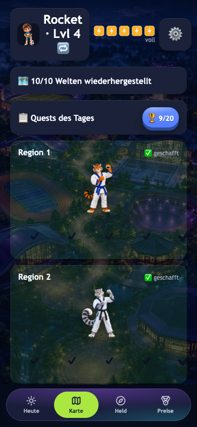
Светлый мультяшный арт регионов, «10/10 Welten wiederhergestellt», хедер Rocket · Lvl 4
- Палитра карты: тёмный неоновый фотореализм A ↔ светлая живописная мультипликация B (обе — AI-арт, разные генерации).
- Прогресс: 0/15 у A ↔ 10/10 «geschafft» у B (данные демо-профиля).
- Структура таб-бара идентична: 4 вкладки, активная — lime.
04 · Герой — ростер
A (legacy)
«Your hero»: один герой Leo, HERO GROWTH, статы Attack/Block/Super move (ближайший экран A — ростера у A нет)
Сейчас (M28)
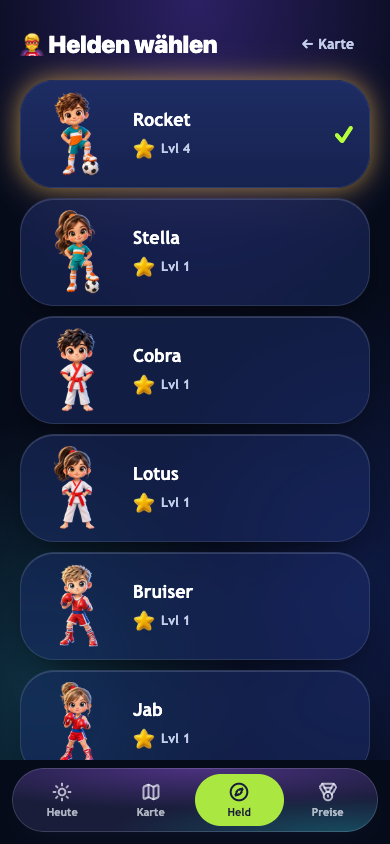
«Helden wählen»: 14 карточек героев, Rocket выбран ✓, у каждого уровень
- У A экран про ОДНОГО героя с ростом; у B — выбор из 14 героев (M19/M20, ростер 10 видов спорта × 14 героев).
- Карточки: у B тёмно-синие glossy с 3D-аватарами; сетки у A здесь нет.
- Блок стат у B перенесён ниже (см. 05) — у A он в центре экрана.
05 · Герой — рост и приёмы
A (legacy)
HERO GROWTH «3 training days to level 2», статы с пояснениями, 3D-львёнок с мячом
Сейчас (M28)
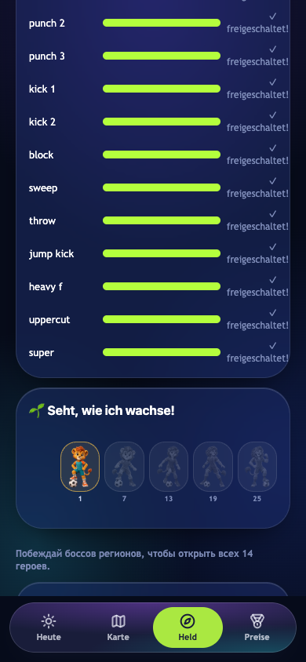
Прогресс 12 приёмов (punch/kick/block/super…), «Seht, wie ich wachse!» — 5 стадий (1→25)
- Механика: 3 стат-полосы A ↔ 12 приёмов с прогресс-барами и пометкой «freigeschaltet» у B (анлок приёмами тренировок, M19).
- Рост: «3 training days to level 2» ↔ 5 стадий формы на уровнях 1/7/13/19/25 с превью персонажа.
- У B добавлена механика «боссы открывают героев» — у A её нет.
- Общее: тёмная карточка + lime прогресс + дружелюбные подсказки «что растит что».
06 · Гардероб (Locker)
A (legacy)
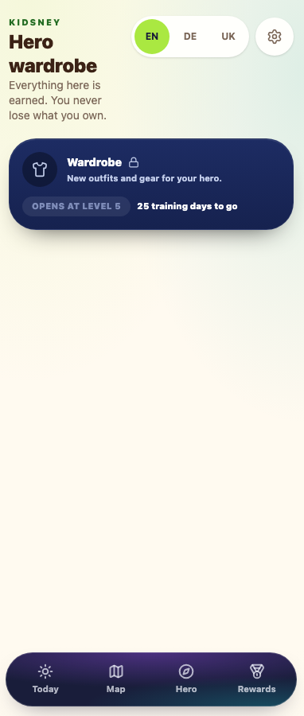
«Hero wardrobe» — СВЕТЛЫЙ экран, карточка Wardrobe 🔒 «OPENS AT LEVEL 5 · 25 training days to go»
Сейчас (M28)
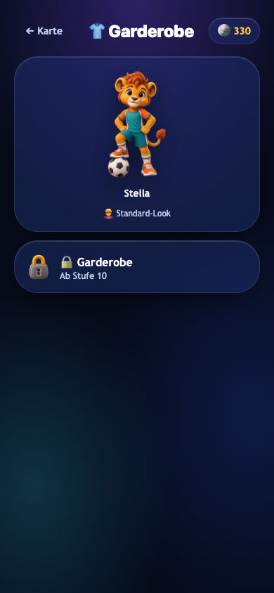
«Garderobe» — ТЁМНЫЙ экран, большое 3D-превью Stella, «Ab Stufe 10», счётчик монет 330
- Тема: A здесь светлая (кремовый фон, тёмные табы) ↔ B тёмный глянец. Это самое заметное расхождение с токенами A на кид-экранах.
- У A нет превью героя — только иконка футболки; у B крупное 3D-превью выбранного героя.
- Порог открытия: level 5 (A) ↔ Stufe 10 (B) — расхождение баланса, не дизайна.
07 · Награды (Rewards)
A (legacy)
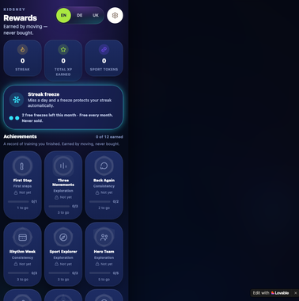
Streak/XP/Tokens, карточка Streak freeze, достижения 0 of 12
Сейчас (M28)
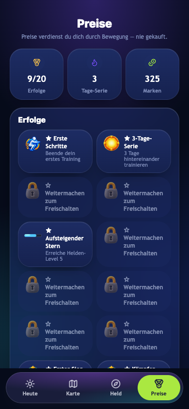
Erfolge 9/20, Tage-Serie 3, Marken 325; грид достижений с замками
- Тон совпадает почти дословно: «Earned by moving — never bought» ↔ «Preise verdienst du dich durch Bewegung — nie gekauft».
- У A на этом экране карточка Streak freeze — у B её пока нет (UI заморозок — заявка основной задаче, согласовано отдельно).
- Счётчики: у B крупные числа с иконками (9/20, 3, 325), у A в демо-кадре нули.
- Грид достижений идентичен по структуре (плитки 2 колонки, замки серые).
08 · Профиль ребёнка (редактирование)
A (legacy)
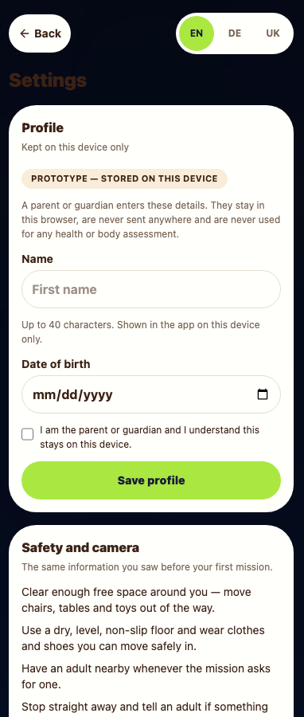
«Settings»: светлая карточка Profile (имя, дата рождения, чекбокс), lime «Save profile»
Сейчас (M28)
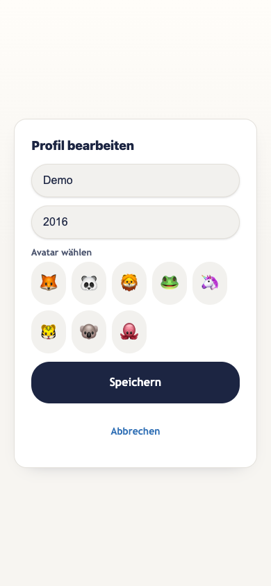
«Profil bearbeiten»: имя, год, выбор эмодзи-аватара, тёмная CTA «Speichern»
- Обе СВЕТЛЫЕ формы — близкое соответствие токенам A (родительские формы).
- У B добавлен выбор аватара (7 эмодзи) — у A аватара нет.
- CTA: lime у A ↔ тёмно-синяя у B; заголовок «Settings» у A тёмным по тёмному — известный дефект контраста A (зафиксирован в аудите), у B заголовок читается.
09 · Перед боем / брифинг
A (legacy)
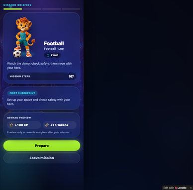
Mission briefing: шаги 0/7, FIRST CHECKPOINT, награды +100 XP / +15 Tokens, «Prepare» / «Leave mission»
Сейчас (M28)
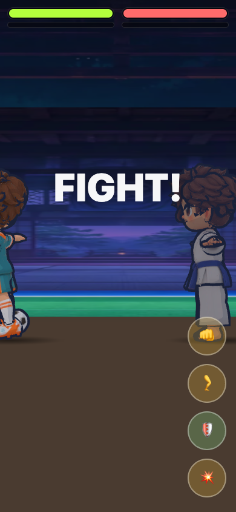
FIGHT! — бойцы лицом друг к другу, HP-бары, 4 кнопки приёмов
- У A боя нет — это брифинг тренировки; у B полноценный файтинг-экран (эталон — ближайший «до старта»).
- Общее: тёмная сцена, lime акценты, плоские HP-бары; у A награды прямо на брифинге, у B — после боя (13).
10 · Бой — начало
A (legacy)

«Your hero» (ближайший — боёв в A нет)
Сейчас (M28)
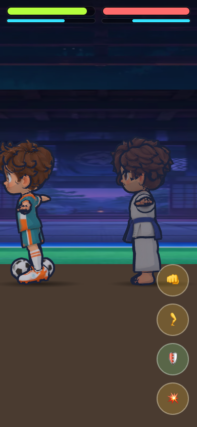
Бой в стойках: HP lime/красный, энергия cyan, арена с трибунами
- Боя в A нет (UI боя не реализован, зафиксировано в аудите) — эталон условный.
- У B: полосы HP + шкала энергии, 4 круглые кнопки приёмов справа, 3D-бойцы в полный рост.
11 · Бой — середина (1)
A (legacy)

Mission briefing (ближайший — боёв в A нет)
Сейчас (M28)
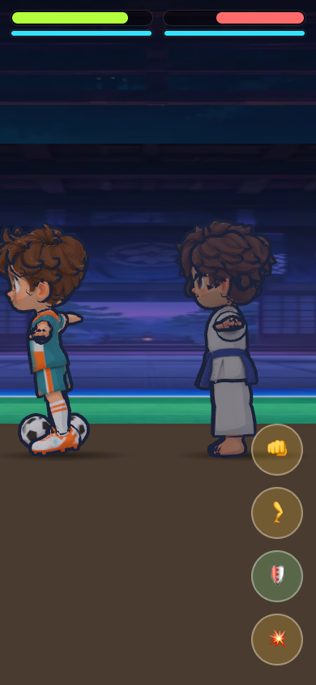
Бойцы в глобальной стойке, HP снижены
- Сравнение условное: у A нет боевых кадров.
- У B бойцы стоят ЛИЦОМ ДРУГ К ДРУГУ (фикс skinYaw из M22 подтянут — регрессия закрыта).
12 · Бой — середина (2), эффект попадания
A (legacy)
Mission briefing (ближайший — боёв в A нет)
Сейчас (M28)
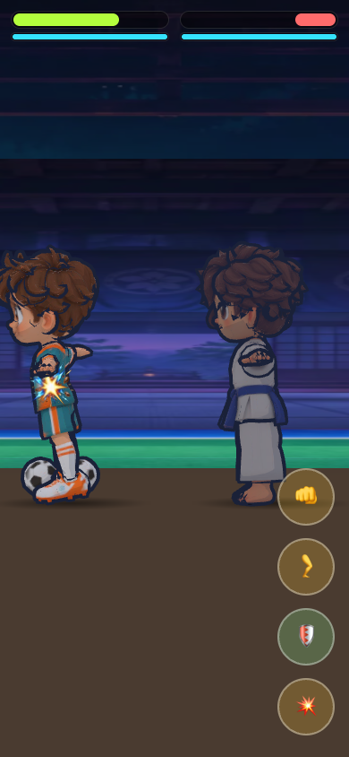
Вспышка попадания на герое, HP босса снижено
- Эффекты ударов (вспышки, частицы) — целиком из B, в A отсутствуют.
- Читаемость сцены хорошая: бойцы контрастны на фоне арены.
13 · Результат боя
A (legacy)
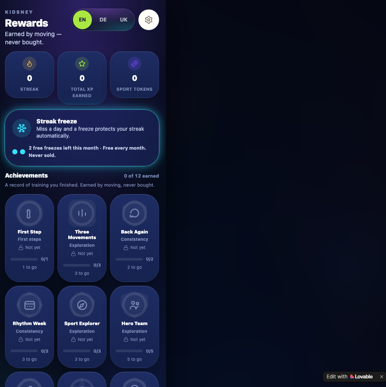
Rewards (ближайший — экрана результата боя в A нет)
Сейчас (M28)
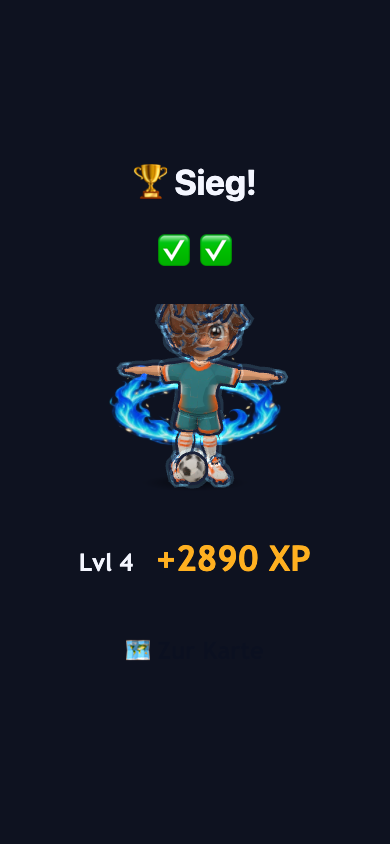
«Sieg!», герой с аурой, +2890 XP
- Экрана результата боя в A нет — эталон условный (награды — ближайший по смыслу).
- У B: трофей, галочки, XP крупно; замечание — герой стоит в T-позе: это артефакт web-рендера (SwiftShader), victory-клип не применился в кадре; на устройстве поза победная.
- Мелкая битая иконка под строкой XP — дефект ассета, внесён в QA-список.
14 · Родительский гейт
A (legacy)
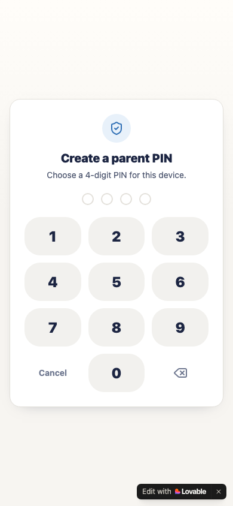
«Create a parent PIN»: светлая карточка, 4-значный PIN, круглые клавиши
Сейчас (M28)
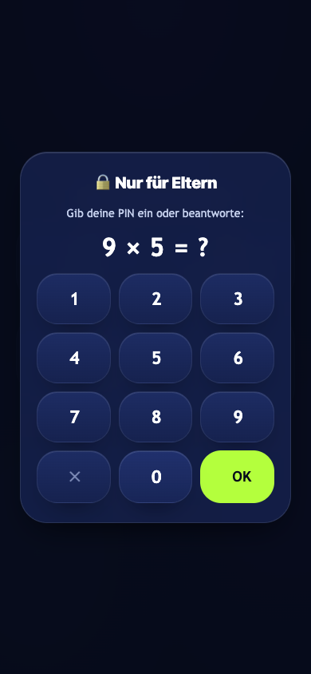
«Nur für Eltern»: тёмная карточка, PIN ИЛИ пример «9 × 5 = ?», lime «OK»
- Механика: у A только PIN-creation (светлый); у B — PIN либо арифметика, тёмная карточка.
- Стиль: светлая родительская карточка A ↔ тёмная glossy B; клавиши у A круглые светлые, у B — скруглённые тёмные с lime OK.
- Арифметический гейт («9 × 5») у B — сильнее против детей, чем PIN у A (и это отмечено ещё в аудите).
15 · Родзона — отчёт
A (legacy)
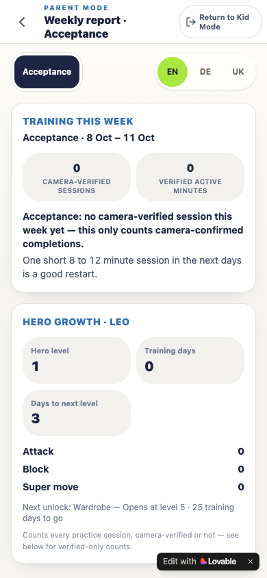
«Weekly report»: Training this week, camera-verified sessions/minutes, Hero Growth
Сейчас (M28)
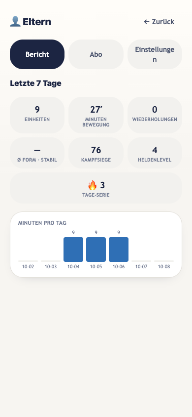
«Letzte 7 Tage»: 9 единиц, 27 минут, 76 побед, серия 3, график минут по дням
- Обе СВЕТЛЫЕ родительские зоны — прямое соответствие токенам A (родзона B построена на компонентах A).
- У A акцент на camera-verified данных и Hero Growth внутри отчёта; у B — плитки статистики (единицы, минуты, победы, уровень) + столбчатый график по дням — плотнее и нагляднее.
- У A табы Overview/Report; у B — Bericht/Abo/Einstellungen. Оба варианта навигации честные, разная структура.
16 · Родзона — подписка
A (legacy)
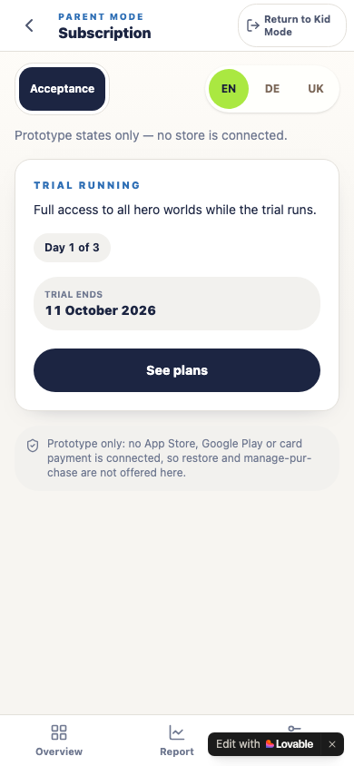
«Subscription»: TRIAL RUNNING «Day 1 of 3», TRIAL ENDS 11 October 2026, «See plans»
Сейчас (M28)
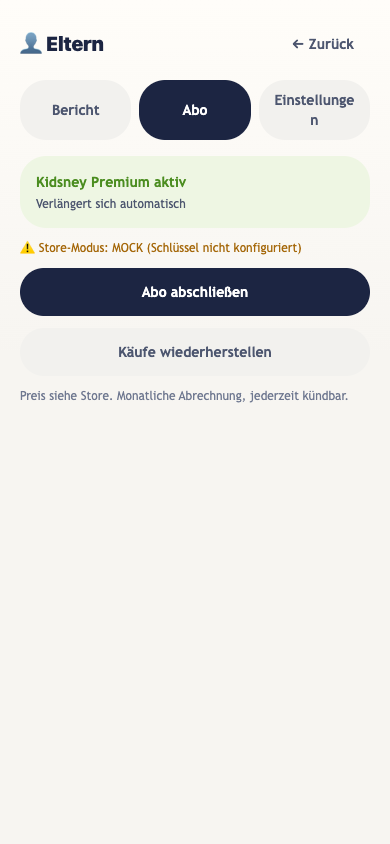
«Kidsney Premium aktiv», «Abo abschließen», «Käufe wiederherstellen», MOCK-плашка
- Светлая тема обеих — соответствие A.
- У A статус trial с датой окончания; у B статус «Premium aktiv» + предупреждение Store-Modus: MOCK (честный бейдж, как требует ревью сторов).
- У B одна CTA «Abo abschließen» и restore — компактнее; у A CTA ведёт на plans (см. 18).
17 · Родзона — настройки
A (legacy)
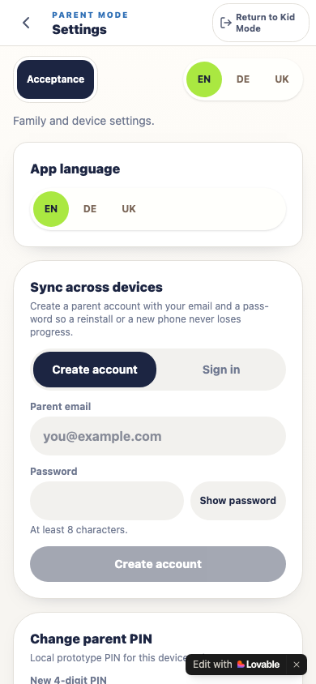
«Settings»: App language, Sync across devices (email + пароль), Change parent PIN
Сейчас (M28)
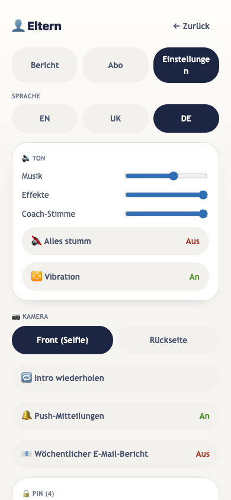
Язык EN/UK/DE, звук (3 слайдера + «Alles stumm», вибрация), камера front/back, пуши, email-отчёт, PIN
- Обе светлые — близко к A. Карточки-секции идентичны по стилю.
- У B сильно больше контролов (звук/вибрация/камера/пуши) — обосновано нативным контуром.
- У A акцент на sync-аккаунт; у B аккаунт живёт в облаке (Supabase auth) — синк-формы не нужно, это правильно.
18 · Родзона — тарифы (paywall)
A (legacy)
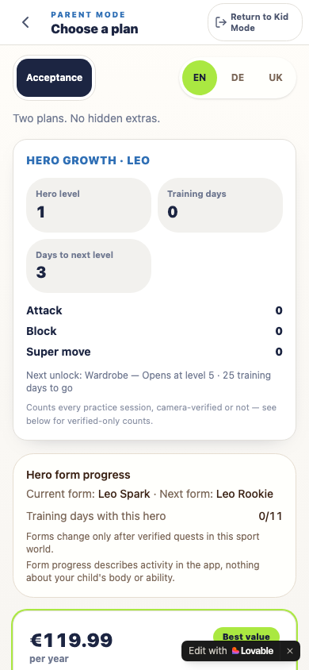
«Choose a plan»: Hero Growth-отчёт на том же экране, €119.99/year «Best value»
Сейчас (M28)
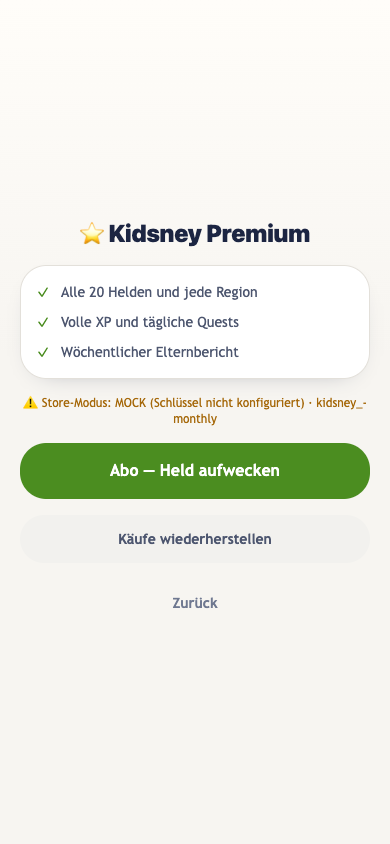
«Kidsney Premium»: 3 пункта фич, MOCK-плашка с id пакета, зелёная CTA, restore
- У A план-экран с ценой и отчётом роста героя (спорный микс); у B чистый premium-экран с фичами.
- CTA у B зелёная (parent-cta) — у A в таком экране CTA тёмная.
- У B честная MOCK-плашка (ключи стора не настроены) — соответствует требованиям ревью; у A «no store is connected» текстом.
19 · Бой — эффекты (щит/супер)
A (legacy)
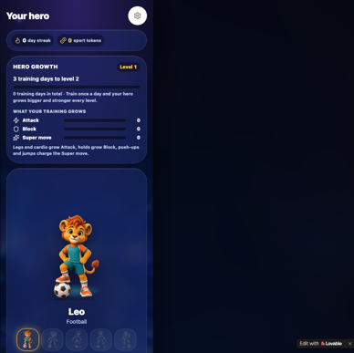
«Your hero» (ближайший — боёв в A нет)
Сейчас (M28)
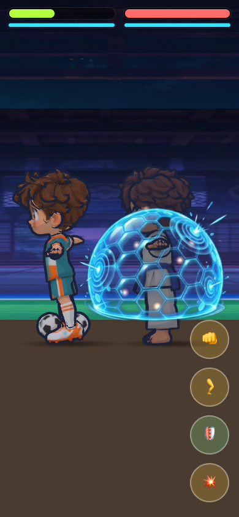
Энерго-щит вокруг босса, вспышки, частицы
- Все боевые эффекты — из B; в A боя нет.
- Щит читается хорошо, не перекрывает HP-бары; визуальный язык эффектов (cyan/белый на тёмной арене) согласован с палитрой кид-зоны.
20 · Бой — поздняя фаза
A (legacy)
Mission briefing (ближайший — боёв в A нет)
Сейчас (M28)
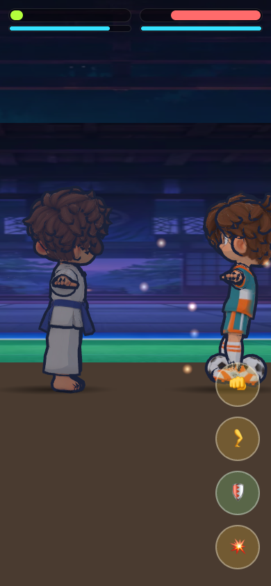
HP героя почти на нуле, искры, босс справа
- Сравнение условное (эталон — брифинг A).
- Читаемость поздней фазы хорошая: HP-бары остаются читаемыми при низких значениях, бойцы не сливаются с фоном.